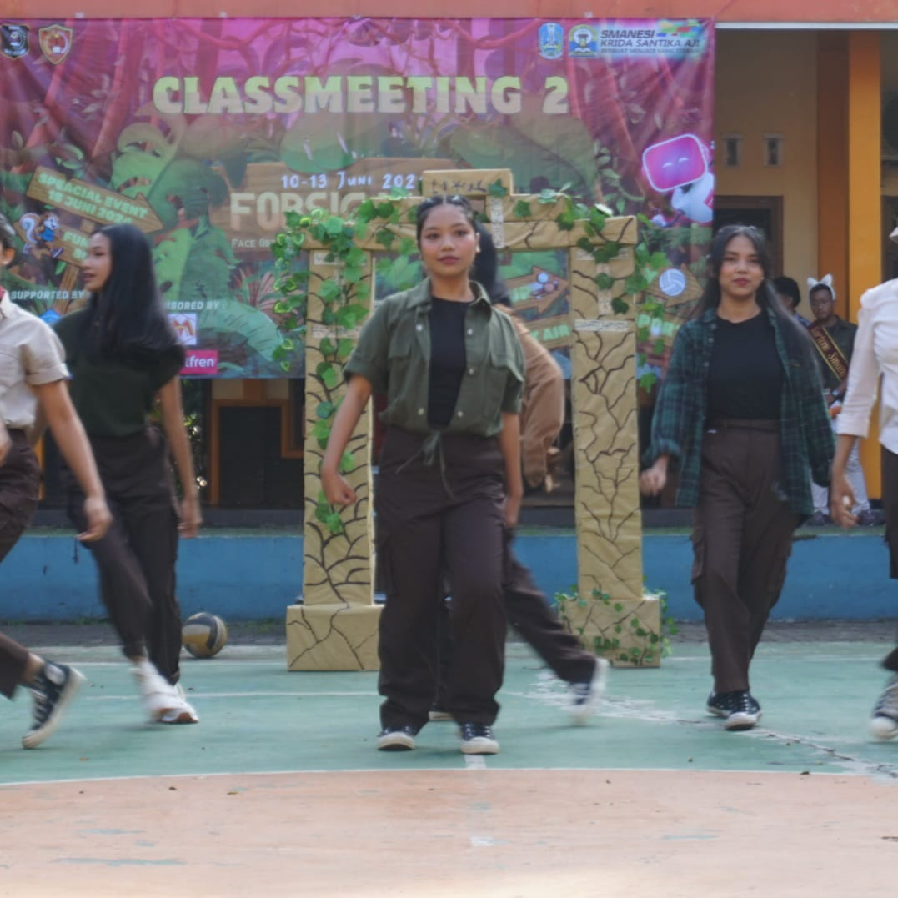

My Early Days

Aku mulai mengenal dance sejak duduk di bangku sekolah dasar. Saat SMP, aku sempat berhenti karena lingkungan sekolah saat itu membuatku tidak lagi aktif menari. Memasuki SMA, aku memutuskan untuk kembali ke dunia dance, dan sejak saat itu aku terus melanjutkannya hingga sekarang di bangku kuliah.
Why Dance Matters to Me

Selain dunia akademik, dance adalah salah satu keahlian yang paling ingin terus aku kembangkan. Aku berharap dance akan selalu menjadi bagian dari identitasku, ke mana pun aku melangkah.
Dance has been more than just a hobby for me; it's a way of expressing myself and connecting with others. It has taught me discipline, creativity, and the importance of perseverance.
Memorable Moments
DBL Dance 2024

DBL Dance 2024 menjadi momen yang tidak akan pernah terlupakan olehku karena DBL merupakan kompetisi pertama dan terakhir yang aku ikuti di SMA.
Meskipun menjadi panggung besar pertamaku rasanya aneh karena aku tidak merasakan tekanan apapun dan aku sangat menikmati penampilanku pada hari pertama DBL itu.
LKMM-TD PKKMB FILKOM

Penampilanku bersama teman-teman di acara LKMM-TD tentunya juga menjadi salah satu momen yang tidak terlupakan untukku.
Penampilan ini menjadi penampilan pertama yang aku lakukan saat baru saja menjajaki dunia perkuliahan, dan ini adalah pertama kalinya aku menari bersama dengan teman-teman yang baru saja aku kenal saat itu.